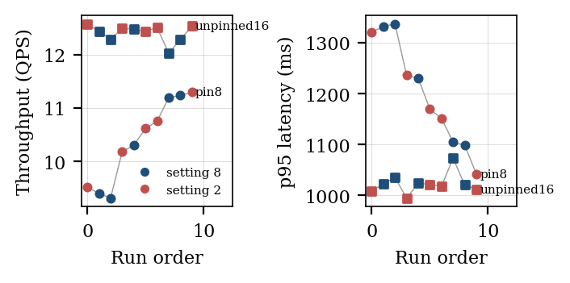
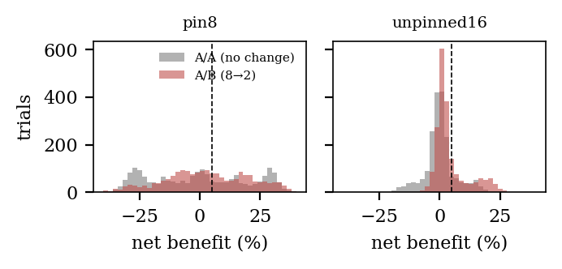
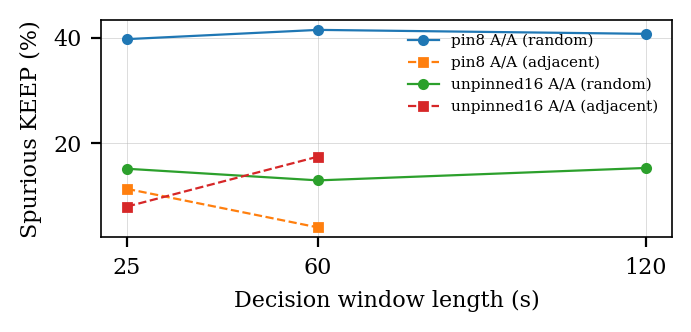
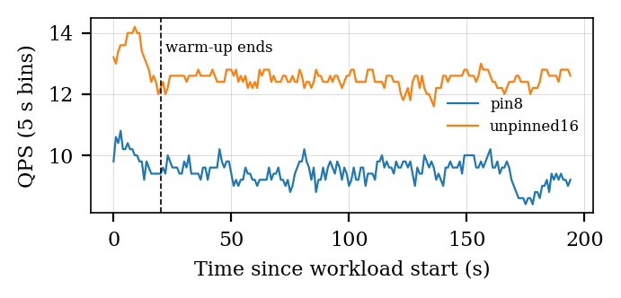

Abstract—Online database tuners change a live system and must then judge, within seconds, whether the change helped. Prior work focuses on which configuration to try; far less attention has been paid to whether the subsequent keep/rollback decision is correct. We present OptiDBX, a safety-first online tuner for PostgreSQL that pairs operating-system and DBMS telemetry, applies one reversible action (reducing max_parallel_workers_per_gather), and keeps or rolls back the change based on client-observed measurements of the workload it owns. Building it exposed three failure modes that silently corrupt online decisions: cold-start measurement inflation, a stale-recommendation defect that blocked every automatic action, and monitor starvation under CPU saturation. We then quantify decision reliability directly. From 20 recorded fixed-configuration runs (46 thousand queries) under CPU-constrained and well-provisioned conditions, we replay the tuner’s rule on thousands of resampled before/after windows. With PostgreSQL restricted to 8 cores, steady-state throughput drifted by about 21 % over 35 min independently of the setting, and five paired blocks could not resolve the action's true effect (+3.5 %, 95 % CI [−2.2, +8.8]). In that regime OptiDBX's 25-s rule kept a change when there was no change at all (A/A) in 40 % of comparisons across runs and 11 % across adjacent windows, and 120-s windows did not reduce the cross-run rate. On 16 cores (run-to-run CV ≤ 2 %) the rates were 15 % and 8 %, and a change with a real but sub-threshold benefit was kept in 26 % of replays. A confidence-interval gate removed most within-run errors but not drift-driven ones, and warm-up bias reversed sign relative to our earlier setup. Non-stationarity, not only sampling noise, is a first-class threat to online keep/rollback decisions.
Index Terms—database tuning, PostgreSQL, online configuration, parallel query, performance measurement, rollback, self-managing databases.
Relational database systems expose hundreds of configuration knobs whose best values depend on workload, data and hardware. Automatic tuners have progressed from rule- and search-based methods [1], [2] through Bayesian optimization and reinforcement learning [3]–[5] to recent large-language-model–guided tuners [6]. Most of these systems tune offline: they explore configurations on a replica and then install the best one.
Online tuning is harder. The tuner changes a live system and must decide almost immediately whether the change helped. A wrong keep leaves a harmful configuration in production; a wrong rollback discards a benefit and churns the system. OnlineTune [7] made safety explicit by restricting exploration to regions near known-safe configurations, and surveys identify safety as a central requirement of online tuning [8]. However, the correctness of the keep/rollback verdict itself—given that performance measurements on a shared host are noisy [9], [10]—has received little direct measurement.
This paper takes a measurement-first view. Our contributions are:
iTuned [1] used adaptive sampling with Gaussian processes; OtterTune [2] reused past workloads with large-scale machine learning; CDBTune [3] and QTune [4] applied deep reinforcement learning; LlamaTune [5] reduced the search space for sample efficiency; GPTuner [6] injects knowledge mined from manuals by a language model into Bayesian optimization. These systems optimise which configuration to choose. OptiDBX intentionally uses a single, well-understood action and invests its complexity in deciding and acting safely.
OnlineTune [7] formulates online tuning as a contextual bandit and constrains exploration to safe regions; it measures unsafe recommendations but not the error rate of the evaluation step that follows an applied change. The survey by Zhao et al. [8] highlights safety and adaptivity as open problems for online tuning.
TUNA [9] shows that cloud noise destabilises tuners and that a configuration judged best may not remain best. Leznik et al. [10] show that benchmark harness artefacts distort tail latencies. In software deployment, sequential tests guard canary releases against false regression verdicts [11]. We bring this concern to the keep/rollback step of database tuning.
Cereda et al. [12] demonstrate that operating-system parameters materially affect DBMS performance, and MLOS [13] reports gains from co-tuning kernel and application parameters. OptiDBX uses OS telemetry for detection and OS affinity for isolating its own monitor; automatic OS-parameter tuning is future work.
An OS collector samples CPU, memory, disk I/O and context switches from /proc; a DB collector samples pg_stat_statements and pg_stat_database. Samples are paired per 5-s interval and rejected if timestamps are skewed by more than 1 s or older than 7.5 s. The CPU/parallelism detector flags possible contention only when four signals are elevated together—CPU utilisation ≥ 90 %, context switches ≥ 3000 per interval, active workers ≥ 4 and query latency ≥ 200 ms—and requires three consecutive such readings before proposing an action. The detector reports association, not causation; the keep/rollback step is what tests whether the action actually helps.
The only automatic action lowers max_parallel_workers_per_gather by one step on an approved ladder {1, 2, 4, 6, 8}. Only sessions created by OptiDBX (“owned” sessions) are tuned; external sessions are monitor-only, and startup is recommendation-only. Every transition (approved → applied → observing → kept/rolled back → cooldown) is journaled so that a crash can be recovered to a known setting. A rolled-back action is not retried under comparable conditions for 30 min.
Before applying, the tuner requires a warm baseline: 15 s of warm-up followed by a full 25-s window of owned queries, with at least 30 completed queries. After a 5-s settle period it measures an equal 25-s window. With ΔQ and ΔP the percentage changes in owned throughput and p95 latency,
net = 1.0·ΔQ − 0.5·ΔP, KEEP ⇔ net ≥ 5 % ∧ ΔP < 10 % ∧ ΔQ > −10 % ∧ errors not increased.
Any other outcome triggers a verified rollback followed by a 30-s cooldown. Algorithm 1 summarises one cycle.
OptiDBX is written in Python 3.12 (about 5.8 k lines across the OS monitor, DB monitor, tuning engine, action guards, workload manager and FastAPI service) with a React dashboard (about 4.8 k lines). Telemetry, actions and experiment runs are persisted in PostgreSQL tables (system_metrics, db_metrics, tuning_actions, experiment_runs). All thresholds live in one shared configuration file (TABLE I) that every component reads, so the detector, the lifecycle and the dashboard cannot disagree about a limit. Database connections carry a statement timeout, and the API returns an explicit “unavailable” status until a valid paired interval exists rather than showing stale or synthetic values. Manual OS actions (CPU affinity and nice) are available but restricted to whitelisted processes, CPUs and values; they are never applied automatically. The code base has 268 automated Python tests and 25 dashboard tests, all passing at the time of writing.
| Parameter | Value | Role |
|---|---|---|
| Sampling interval | 5 s | OS/DB pairing period |
| Max. skew / sample age | 1 s / 7.5 s | Reject unpaired data |
| CPU utilisation | ≥ 90 % | Detector signal 1 |
| Context switches | ≥ 3000 / interval | Detector signal 2 |
| Active parallel workers | ≥ 4 | Detector signal 3 |
| Query latency | ≥ 200 ms | Detector signal 4 |
| Consecutive readings | 3 | Persistence before acting |
| Action ladder | {1, 2, 4, 6, 8} | Approved per-gather values |
| Baseline warm-up | 15 s | Excluded from baseline |
| Observation window | 30 s (5 s settle) | Post-change measurement |
| Min. owned queries | 30 per window | Trust a KEEP |
| Keep threshold; weights | 5 %; 1.0 / 0.5 | Net benefit (QPS / p95) |
| Hard vetoes | p95 +10 %, QPS −10 % | Force rollback |
| Cooldown; rejection memory | 30 s; 30 min | Prevent oscillation |
A live closed loop yields one decision per several minutes, too few to estimate error rates. We therefore separate measurement from decision. We record raw traces—every query’s start time, latency and outcome, warm-up included—for fixed settings, then replay the decision rule offline on many window pairs drawn from those traces.
Both settings run back-to-back inside each block, so the long-run effect of the action (8 → 2) is estimated from paired within-block differences of the full 180-s steady-state windows, which cancels slow drift; 95 % confidence intervals are bootstrapped over blocks [14]. The correct verdict is KEEP if the paired mean net benefit is at least 5 %, otherwise ROLLBACK.
We repeat A/A and A/B for window lengths of 25, 60 and 120 s, and evaluate a CI-gated variant that keeps only when the bootstrap 95 % lower bound of net clears 5 %. Replayed windows come from independent runs rather than one continuous session; this isolates measurement noise but does not model slow drift, which A/A-adjacent partly captures.
Cold-start inflation. Early closed-loop cycles measured the baseline immediately after workload start. Reductions appeared to nearly double throughput (≈6.4 → ≈12 QPS) with a 5/5 keep rate; with warm-up excluded the true baseline was ≈11 QPS, matching the post-change value. These results were withdrawn.
Stale recommendation. Automatic approval submitted a recommendation stamped at first detection while the baseline window advanced each interval; the apply-time continuity check therefore rejected every stable recommendation. No automatic KEEP was ever recorded until the timestamp was refreshed at approval time.
Monitor starvation. At near-100 % CPU the 5-s sampling loop shared cores with the saturating workload, missed its cadence, and caused valid actions to be rejected for discontinuous baselines. Pinning the monitor to a reserved core restored cadence. Detection requires high CPU while monitoring requires spare CPU—an inherent tension for online tuners.
On a 16-core host with an 8-worker pool, a fixed-parallelism sweep (10 sessions, warm-up excluded) showed a throughput spread of only ≈4 % across settings 1–8, within noise; the tuner correctly took no action. Under constructed CPU oversubscription (CPU-bound query, enlarged pool, 6 sessions) p95 latency fell from 606 ms at setting 8 to 290 ms at setting 1 at flat throughput. In closed-loop cycles with PostgreSQL pinned to 8 cores, 3 of 6 completed actions were kept, each with a measured p95 improvement of 5.5–8.8 %; with 12 cores, 1 of 5 was kept (TABLE II). These cycle counts are small and are reported without confidence intervals.
| Cycle | ΔQPS | Δp95 | Net | Outcome |
|---|---|---|---|---|
| 0 | +4.3 % | −8.8 % | +8.6 % | KEEP |
| 1 | +0.4 % | −0.4 % | +0.6 % | ROLLBACK |
| 2 | +4.5 % | −6.6 % | +7.8 % | KEEP |
| 3 | +3.1 % | −1.3 % | +3.8 % | ROLLBACK |
| 4 | +4.5 % | −5.5 % | +7.3 % | KEEP |
| 5 | −7.4 % | +8.7 % | −11.8 % | ROLLBACK |
PostgreSQL 16.15 runs in WSL2 Ubuntu 24.04 on a 16-logical-CPU laptop with 7 GB assigned to the VM; the dataset is pgbench scale 10 (106 rows in pgbench_accounts), with max_worker_processes = max_parallel_workers = 8. Six owned sessions repeatedly execute a read-only parallel aggregate (SELECT sum(sqrt(aid)·sqrt(|abalance|+1)) FROM pgbench_accounts). Each run opens fresh sessions, fixes the per-gather setting, and runs 20 s of warm-up plus 180 s of measurement. Each condition has 5 blocks; within a block both settings run once in a seeded random order. In pin8, PostgreSQL is restricted to cores 0–7; in unpinned16, to all 16 cores. The trace recorder runs on cores 12–15 in both conditions.
| Condition | Set. | Runs | QPS | CV | Range | p95 (ms) | CV | Range |
|---|---|---|---|---|---|---|---|---|
| pin8 (8 cores) | 8 | 5 | 10.29 | 9.0 | 20.6 | 1220 | 9.5 | 21.7 |
| pin8 (8 cores) | 2 | 5 | 10.47 | 6.4 | 18.8 | 1184 | 8.7 | 26.7 |
| unpinned16 (16 cores) | 8 | 5 | 12.30 | 1.4 | 3.7 | 1035 | 2.1 | 5.1 |
| unpinned16 (16 cores) | 2 | 5 | 12.51 | 0.4 | 1.1 | 1011 | 1.0 | 2.7 |
TABLE III summarises the runs. in pin8 the paired net benefit of 8 → 2 is +3.5 % (95 % CI [-2.2, +8.8], per-block SD 6.9 points), so the correct verdict is ROLLBACK; a linear fit of throughput against run order changes by +21.2 % across the condition; in unpinned16 the paired net benefit of 8 → 2 is +2.8 % (95 % CI [+0.9, +4.9], per-block SD 2.5 points), so the correct verdict is ROLLBACK; a linear fit of throughput against run order changes by -1.2 % across the condition. The pin8 drift is independent of the setting (Fig. 2) and larger than both the 5 % threshold and the effect under test. The unpaired estimate, which ignores blocks, is wider: +1.8 % QPS with CI [-6.6, +10.9] in pin8.

| Condition | Window | A/A | A/A-adj. | A/B | A/B-cold |
|---|---|---|---|---|---|
| pin8 | 25 s | 39.7 | 11.4 | 44.6 | 33.6 |
| pin8 | 60 s | 41.4 | 4.1 | 45.6 | 43.8 |
| pin8 | 120 s | 40.7 | – | 41.9 | 43.4 |
| pin8 | 25 s, CI-gated | 28.2 | 1.2 | 15.0 | 2.6 |
| unpinned16 | 25 s | 15.2 | 8.1 | 26.4 | 6.7 |
| unpinned16 | 60 s | 13.0 | 17.5 | 26.4 | 9.3 |
| unpinned16 | 120 s | 15.3 | – | 22.6 | 20.0 |
| unpinned16 | 25 s, CI-gated | 0.2 | 0.0 | 3.4 | 0.0 |
Spurious KEEPs. Under A/A no real change exists, yet the 25-s rule returned KEEP in 39.7 % of cross-run comparisons in pin8 and 15.2 % in unpinned16 (TABLE IV). The causes differ. In pin8 the dominant cause is the setting-independent drift: windows from different runs differ by more than the 5 % threshold. In unpinned16 throughput is stable (CV ≤ 1.4 %) but p95 latency varies more (range up to 7.8 % across runs), and p95 enters the rule with weight 0.5. Fig. 3 shows that at 25 s the A/A and A/B distributions of the decision statistic overlap almost completely.
Longer windows do not cure drift. Lengthening windows from 25 s to 120 s left the cross-run A/A rate in pin8 at about 40 % (Fig. 4), because more samples per window do not remove a difference between runs. Adjacent windows, which mirror the live before/after timing, fare better in pin8 (11.4 % at 25 s, 4.1 % at 60 s). In unpinned16 the adjacent estimates (8.1 % at 25 s, 17.5 % at 60 s) rest on effectively five runs per setting and are imprecise; we do not read a trend into them.
A/B decisions. In both conditions the correct verdict is ROLLBACK. The rule nevertheless kept the change in 44.6 % (pin8) and 26.4 % (unpinned16) of 25-s replays. In unpinned16 the action does help slightly (+2.8 %, CI [+0.9, +4.9]), so these KEEPs are not harmful, but they show that the 5 % bar written into the rule is not what the decision actually enforces. In pin8 even the ground truth is unresolved with five blocks.
Warm-up bias changes sign. In this setup the first 20 s were on average 3.5 % (pin8) and 8.3 % (unpinned16) faster than steady state (Fig. 5). This is consistent with, for example, frequency boosting after the 5-s idle gap between runs; we did not measure CPU frequency. A cold baseline therefore made the change look worse: in unpinned16 the KEEP rate fell from 26.4 % to 6.7 %. In our earlier API-managed workload, ramp-up had the opposite effect and produced a spurious ≈2× gain (Section V-A). Because the sign depends on the setup, warm-up must be excluded, not corrected for.
CI gating. Keeping only when the bootstrap lower bound of the net benefit clears 5 % reduced adjacent-window spurious KEEPs to 1.2 % (pin8) and 0.0 % (unpinned16), and A/B KEEPs to 15.0 % and 3.4 %. It could not remove the drift-driven cross-run errors in pin8 (28.2 %), because a bootstrap over queries within one window cannot see variation between runs. No condition here had a true effect above the threshold, so we could not yet measure how often the gate rejects a genuinely beneficial change.



Measurement dominates policy. The move from never keeping a change to a 50 % keep rate under oversubscription came from measurement and apply plumbing—owned-workload signals, warm-up exclusion and the timestamp fix—not from a smarter policy. Two of the three defects corrupted results silently rather than failing loudly, which is the most dangerous class of bug in an autonomous system.
Non-stationarity is the hard case. In the CPU-constrained regime—the regime the action is designed for—throughput drifted by about 21 % in 35 min regardless of the setting. That drift is larger than the 5 % threshold and larger than the effect being tested, so any rule that compares one before-window with one after-window can confuse drift with effect. We have not identified its cause; host power or thermal management and WSL2 scheduling are candidates we did not instrument. Promising remedies are designs that cancel drift: switchback (apply–revert–apply) evaluation, paired blocks as used for our ground truth, and sequential tests with anytime-valid error control [11], [15].
“No action” is a correct outcome. On a well-provisioned host the action yields no measurable benefit; a tuner that reports this honestly, rather than manufacturing activity, is behaving correctly.
Implications for tuner builders. Our results suggest five practical rules for any online tuner, independent of how it chooses configurations. (i) Judge a change on the workload the tuner controls, measured at the client, not on server-wide counters that mix in unrelated sessions. (ii) Exclude warm-up explicitly; its bias changed sign between our two setups, so it cannot be corrected by a fixed offset. (iii) Report the uncertainty of every decision, not only its point estimate; a 25-s window carries several percentage points of noise in p95 latency alone. (iv) Prefer designs that cancel drift, such as switchback or paired evaluation, over a single before/after comparison. (v) Reserve CPU for the monitor, since the condition that triggers tuning is the one that starves measurement.
Why the rule fails without obvious bugs. The KEEP threshold of 5 % looks conservative, yet the rule kept no-change comparisons far more often than the threshold suggests. Two properties combine: the latency term is a 95th percentile estimated from roughly one hundred queries per window, which is volatile, and the net statistic adds independent noise from the before and after windows. A threshold is only meaningful relative to the spread of the statistic it is applied to; fixing it without measuring that spread leaves the actual error rate unknown.
External validity. The study covers one knob, one analytical query and one host running under WSL2; it does not generalise to multi-knob tuning, OLTP or mixed workloads, or other hardware. The positive regime in Section V-B was constructed, and the trace-replay conditions contain no action with a true effect above the threshold, so false-rollback rates are not yet measured.
Internal validity. WSL2 adds a virtualisation layer whose scheduling and power behaviour we did not instrument; the drift observed in pin8 may originate there or in host power management. Run order was randomised within blocks to blunt such effects, and the ground truth is paired within blocks, but five blocks per condition give wide confidence intervals.
Construct validity. Replayed windows are drawn from independent runs, so slow drift inside one session is only partly modelled; A/A-adjacent comparisons approximate the live case. Closed-loop cycle counts are small and reported without confidence intervals. No comparison against other tuners has yet been made.
Online database tuning is limited less by choosing a configuration than by safely applying it and honestly judging its effect. OptiDBX grounds keep/rollback in warm-up-excluded, owned-workload measurements inside a fail-closed lifecycle. Trace replay shows that its fixed-window rule is fooled often: at 25 s it returned KEEP for no-change comparisons in 15–40 % of cross-run and 8–11 % of adjacent-window replays. The main causes were setting-independent drift and noisy tail-latency estimates. Longer windows did not remove drift-driven errors, and a confidence-interval gate removed only within-run errors. Warm-up bias changed sign between two setups. These findings come from one host, one query and one knob, and are a pilot rather than a general result.
Next we will (i) extend traces to TPC-H and pgbench TPC-B workloads, (ii) add work_mem as a second knob, (iii) evaluate sequential tests [11], [15] as a replacement for fixed-window thresholds, (iv) compare against a static default, a DBA heuristic and a naive server-counter tuner, and (v) isolate the monitor using cgroups and repeat the study on native Linux.
Source code, the raw per-query traces (experiments/replay/data/) and the scripts that regenerate every number and figure in Section V-C–E are in the OptiDBX repository.